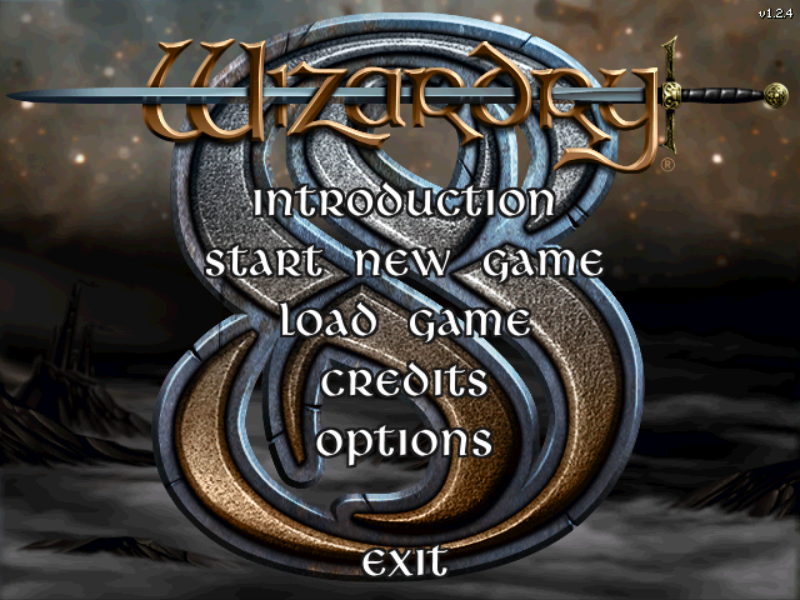
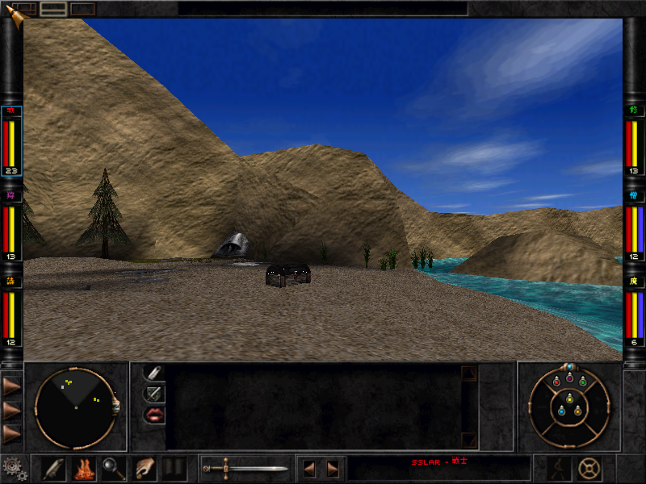
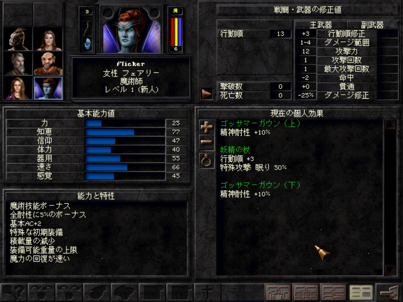
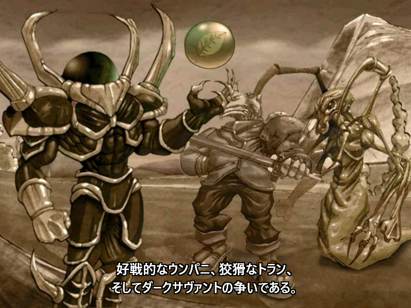
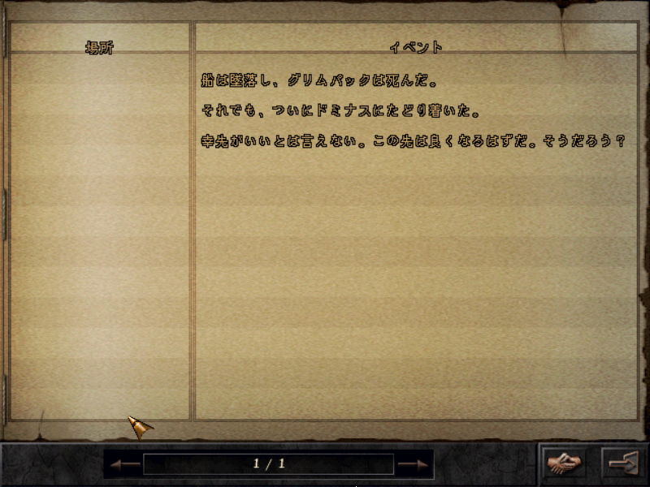

どんなゲーム？
ウィザードリィ8は、2001年に発売されたシリーズ第8作です。第7作の結末から物語が続き、惑星ドミナスを舞台に、 ダークサヴァントやトラン、ウンパニなどの勢力と、宇宙の環への昇神をめぐって争います。
Wizardry 8（2001年）
Steam 版の「Wizardry 8」を日本語で遊べるようにする、非公式のファンメイドパッチです。 物語や住人たちとの会話、メニューと各画面、戦闘の文言、日誌、品物・怪物・人物・呪文・技能の名前と説明まで日本語にしています。 動画（オープニング、各陣営の導入、エンディング）には日本語の字幕を付けました。 ゲームのフォルダにファイルを置くだけで日本語になります。元のゲームのファイルは書き換えません。
ウィザードリィ8は、2001年に発売されたシリーズ第8作です。第7作の結末から物語が続き、惑星ドミナスを舞台に、 ダークサヴァントやトラン、ウンパニなどの勢力と、宇宙の環への昇神をめぐって争います。





Wizardry8_JP.zip を展開し、中の ddraw.dll・wiz8jp.dat・wiz8jp.chr・wiz8jp.sub の 4 つを、ゲームのフォルダにコピーします。ゲームのフォルダは、Steam でゲームを右クリック → 管理 → ローカルファイルを閲覧、で開く場所です（Wiz8.exe・Data フォルダがある場所）。
ddraw.dll・wiz8jp.dat・wiz8jp.chr・wiz8jp.sub）を削除すると、元の英語版に戻ります。元のファイルは書き換えていないので、整合性の確認も要りません。ddraw.dll をゲームのフォルダに置くと、ゲームが起動時に読み込みます（Windows の ddraw.dll への中継を兼ねています）。
ゲームがデータを読み込むときに、wiz8jp.dat の訳文と日本語の字形を当てます。wiz8jp.dat は元のファイルとの差分で、
元のファイルが Steam 版と違うときは、そのファイルは英語のまま表示します。
元のゲーム（Steam 版）には、動画を再生する所で画面の準備に失敗し、動画が映らない・止まる不具合があります。 このパッチでは、動画を Glide（Steam 版に付属の nGlide）の画面に直接描くように直し、動画が映るようにしました。 台詞のある動画（オープニング、ウンパニ・トラン・無所属・新しいパーティーの導入、エンディング）には日本語の字幕が出ます。
ウィザードリィ8の会話は、言葉（キーワード）で相手に質問するしくみです。 ゲームの中のキーワードは英語のままですが、日本語の言葉を選んで尋ねられます（選んだ言葉を、相手が知っている英語のキーワードに置き換えて尋ねます）。 キーボードで打つときだけ、英語で入力します。
台詞の中で、質問に使える言葉には「ドミナス(DOMINUS)」「宇宙の環(COSMIC CIRCLE)」のように英語を添えています。 かっこの中の英語が、キーボードで打つときのキーワードです。
相手の台詞に出てきたキーワードは、ゲームが自動で拾って、画面右の話題の一覧に追加します。 訳語のある言葉は日本語で、ない言葉は英語のまま入ります（長い言葉は一覧の幅で省略して表示されます）。 一覧の言葉を選んで「話題」を押せば、入力しなくても質問できます。一覧は「人物」「場所」「アイテム」「その他」で絞り込めます。
パーティーの質問は「マーテンについて教えて。」のように、選んだ言葉＋日本語の文で表示されます（英語で打ったときは「martenについて教えて。」）。
入力欄では、キーワードだけを打つほかに、次の書き出しが使えます。talk about と where で始まる形は、あとにキーワードを続けます。join と recruit はそれだけで打ちます。
| 入力の形 | 意味 | 入力の例 |
|---|---|---|
キーワード | その言葉について尋ねる | rumors marten dark savant |
talk about キーワード | その言葉について尋ねる | talk about marten |
where is 名前 | 人や場所がどこにあるかを尋ねる | where is anna where is arnika |
where are 名前 | 同上（複数のもの） | where are umpani |
where's 名前 | 同上 | where's tramain |
join | 仲間に加わってほしいと頼む（仲間になる人物だけ） | join |
recruit | 同上 | recruit |
上のどれにも当てはまらない英文を打ったときは、文を単語に分けて、その中にキーワードがあればそれで質問します
（例：what about marten なら marten で尋ねます）。二語以上のキーワード（dark savant など）は、その言葉だけを打ってください。
| 種類 | キーワード（入力する英語） |
|---|---|
| あいさつ・世間話 | hi how are you rumors bye |
| 商売 | trade buy items armor magic potion |
| 物語の鍵 | dark savant（ダークサヴァント） cosmic circle（宇宙の環） ascension peak（昇神の峰） destinae dominus（デスティナエ・ドミナス） marten（マーテン） phoonzang（フーンザン） |
| 場所 | arnika（アルニカ） trynton（トリントン） marten bluff rapax castle new city monastery（修道院） |
| 種族・勢力 | t'rang（トラン） umpani（ウンパニ） rapax（ラパックス） mook（ムーク） higardi（ハイガーディ） trynnie（トリニー） |
| 人物 | vi domina（ヴィ・ドミナ） anna（アンナ） tramain（トレメイン） zant barlone |
答えの中にさらにキーワードが出てくるので、それをたどって話を広げていくのがウィザードリィ8の会話の進め方です。
多くの住人は、つづりを少し間違えた言葉（ascention など）も聞き取ってくれます。
ddraw.dll を使う MOD やツール（画面のラッパーなど）とは同時に使えません。誤訳や不自然な訳に気づいたら、GitHub の Issues で教えてください。